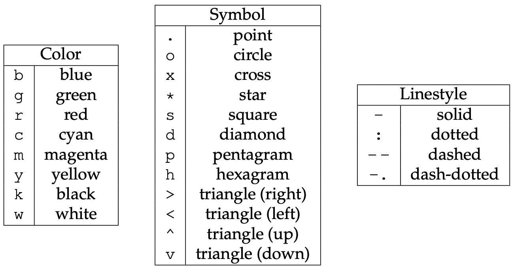

Plotting with matplotlib
There are hundreds of visualization packages in Python. Check out this diagram of the Python Visualization Landscape (circa 2017, by Nicolas Rougier) which focuses on 1D+2D packages at the time (and only barely mentions 3D sci-vis packages). For 3D examples, check our gallery in which most images were rendered with Python.
- Matplotlib - plotting into static images
- Plotly - plotting into interactive HTML5
- Bokeh - also plotting into interactive HTML5
- plotnine - Python clone of R’s ggplot2 (based on the “Grammar of Graphics”)
One of the most widely used Python plotting libraries is matplotlib. Matplotlib is open source and produces static images (and non-interactive animations).
Simple line/scatter plots
If working in a Jupyter notebook, you can create a simple line plot with:
%matplotlib inline
import matplotlib.pyplot as plt
plt.figure(figsize=(10,8))
from numpy import linspace, sin
x = linspace(0.01,1,300)
y = sin(1/x)
plt.plot(x, y, 'bo-')
plt.xlabel('x', fontsize=18)
plt.ylabel('f(x)', fontsize=18)If working inside a terminal on your own computer (where you can open windows), you can display the graph with:
plt.show() # not needed inside the Jupyter notebookBoth in a Jupyter notebook and in the terminal, you can save the plot with:
plt.savefig('filename.png')
# plt.savefig('filename.png', dpi=300) # optionally specify the resolution
Offscreen plotting - You can create the same plot with offscreen rendering directly to a file:
import matplotlib as mpl import matplotlib.pyplot as plt mpl.use('Agg') # enable PNG backend plt.figure(figsize=(10,8)) from numpy import linspace, sin x = linspace(0.01,1,300) y = sin(1/x) plt.plot(x, y, 'bo-') plt.xlabel('x', fontsize=18) plt.ylabel('f(x)', fontsize=18) plt.savefig('filename.png')
Let’s add the second line, the labels, and the legend. Note that matplotlib automatically adjusts the axis ranges to fit both plots:
%matplotlib inline
import matplotlib.pyplot as plt
plt.figure(figsize=(10,8))
from numpy import linspace, sin
x = linspace(0.01,1,300)
y = sin(1/x)
plt.plot(x, y, 'bo-', label='one')
plt.plot(x+0.3, 2*sin(10*x), 'r-', label='two')
plt.legend(loc='lower right')
plt.xlabel('x', fontsize=18)
plt.ylabel('f(x)', fontsize=18)Let’s plot these two functions side-by-side:
%matplotlib inline
import matplotlib.pyplot as plt
fig = plt.figure(figsize=(12,4))
from numpy import linspace, sin
x = linspace(0.01,1,300)
y = sin(1/x)
ax = fig.add_subplot(121) # on 1x2 layout create plot #1 (`axes` object with some data space)
plt.plot(x, y, 'bo-', label='one')
ax.set_ylim(-1.5, 1.5)
plt.xlabel('x')
plt.ylabel('f1')
plt.legend(loc='lower right')
fig.add_subplot(122) # on 1x2 layout create plot #2
plt.plot(x+0.2, 2*sin(10*x), 'r-', label='two')
plt.xlabel('x')
plt.ylabel('f2')
plt.legend(loc='lower right')There is also an option to specify absolute coordinates of each plot with fig.add_axes():
- replace the first
ax = fig.add_subplot(121)withax = fig.add_axes([0.1, 0.7, 0.8, 0.3]) # left, bottom, width, height - replace the second
fig.add_subplot(122)withfig.add_axes([0.1, 0.2, 0.8, 0.4]) # left, bottom, width, height
The 3rd option for more fine-grained control is plt.axes() – it creates an axes object (a region of the figure with some data space). These two lines are equivalent - both create a new figure with one subplot:
fig = plt.figure(figsize=(8,8)); ax = fig.add_subplot(111)
fig = plt.figure(figsize=(8,8)); ax = plt.axes()Shortly we will see that we can pass additional flags to fig.add_subplot() and plt.axes() for more coordinate system control.
Break the plot into two subplots, the fist taking 1/3 of the space on the left, the second one 2/3 of the space on the right.
Let’s plot a simple line in the x-y plane:
import matplotlib.pyplot as plt
import numpy as np
fig = plt.figure(figsize=(12,12))
ax = fig.add_subplot(111)
x = np.linspace(0,1,100)
plt.plot(2*np.pi*x, x, 'b-')
plt.xlabel('x')
plt.ylabel('f1')Replace ax = fig.add_subplot(111) with ax = fig.add_subplot(111, projection='polar'). Now we have a plot in the phi-r plane, i.e. in polar coordinates. Phi goes [0,2\(\pi\)], whereas r goes [0,1].
?fig.add_subplot # look into `projection` parameterimport matplotlib.pyplot as plt
import numpy as np
fig = plt.figure(figsize=(12,12))
ax = fig.add_subplot(111, projection='mollweide')
lon = np.radians(np.linspace(30,90,10))
lat = np.radians(np.linspace(15,18,10))
plt.plot(lon, lat, 'go-')You can use this projection parameter together with cartopy package to process 2D geospatial data to produce maps, while all plotting is still being done by Matplotlib. We teach cartopy in a separate workshop.
Let’s try a scatter plot:
%matplotlib inline
import matplotlib.pyplot as plt
import numpy as np
plt.figure(figsize=(10,8))
x = np.random.random(size=1000) # 1D array of 1000 random numbers in [0,1]
y = np.random.random(size=1000)
size = 1 + 50*np.random.random(size=1000)
plt.scatter(x, y, s=size, color='lightblue')For other plot types, click on any example in the Matplotlib gallery.
For colours, see Choosing Colormaps in Matplotlib.
Heatmaps
Let’s plot a heatmap of monthly temperatures at the South Pole:
%matplotlib inline
import matplotlib.pyplot as plt
from matplotlib import cm
import numpy as np
plt.figure(figsize=(15,10))
months = ['Jan', 'Feb', 'Mar', 'Apr', 'May', 'Jun', 'Jul', 'Aug', 'Sep', 'Oct', 'Nov', 'Dec', 'Year']
recordHigh = [-14.4,-20.6,-26.7,-27.8,-25.1,-28.8,-33.9,-32.8,-29.3,-25.1,-18.9,-12.3,-12.3]
averageHigh = [-26.0,-37.9,-49.6,-53.0,-53.6,-54.5,-55.2,-54.9,-54.4,-48.4,-36.2,-26.3,-45.8]
dailyMean = [-28.4,-40.9,-53.7,-57.8,-58.0,-58.9,-59.8,-59.7,-59.1,-51.6,-38.2,-28.0,-49.5]
averageLow = [-29.6,-43.1,-56.8,-60.9,-61.5,-62.8,-63.4,-63.2,-61.7,-54.3,-40.1,-29.1,-52.2]
recordLow = [-41.1,-58.9,-71.1,-75.0,-78.3,-82.8,-80.6,-79.3,-79.4,-72.0,-55.0,-41.1,-82.8]
vlabels = ['record high', 'average high', 'daily mean', 'average low', 'record low']
Z = np.stack((recordHigh,averageHigh,dailyMean,averageLow,recordLow))
plt.imshow(Z, cmap=cm.winter)
plt.colorbar(orientation='vertical', shrink=0.45, aspect=20)
plt.xticks(range(13), months, fontsize=15)
plt.yticks(range(5), vlabels, fontsize=12)
plt.ylim(-0.5, 4.5)
for i in range(len(months)):
for j in range(len(vlabels)):
text = plt.text(i, j, Z[j,i],
ha="center", va="center", color="w", fontsize=14, weight='bold')Change the text colour to black in the brightest (green) rows and columns. You can do this either by specifying rows/columns explicitly, or (better) by setting a threshold background colour.
This is a take-home exercise. Modify the code to display only 4 seasons instead of the individual months.
3D topographic elevation
For this we need a data file – let’s download it. Open a terminal inside your Jupyter dashboard. Inside the terminal, type:
wget http://bit.ly/pythfiles -O pfiles.zip
unzip pfiles.zip && rm pfiles.zip # this should unpack into the directory data-python/This will download and unpack the ZIP file into your home directory. Now switch back to Python.
%pwd # run `pwd` bash command
%ls # make sure you see data-python/Let’s plot tabulated topographic elevation data:
from matplotlib import cm
from matplotlib.colors import LightSource
import matplotlib.pyplot as plt
import numpy as np
import pandas as pd
table = pd.read_csv('data-python/mt_bruno_elevation.csv')
z = np.array(table)
nrows, ncols = z.shape
x = np.linspace(0,1,ncols)
y = np.linspace(0,1,nrows)
x, y = np.meshgrid(x, y)
rgb = LightSource(270, 45).shade(z, cmap=cm.gist_earth, vert_exag=0.1, blend_mode='soft')
fig, ax = plt.subplots(subplot_kw=dict(projection='3d'), figsize=(10,10)) # figure with one subplot
ax.view_init(20, 30) # (theta, phi) viewpoint
surf = ax.plot_surface(x, y, z, facecolors=rgb, linewidth=0, antialiased=False, shade=False)Replace fig, ax = plt.subplots() with fig = plt.figure() followed by ax = fig.add_subplot(). Don’t forget about the 3d projection. This one is a little tricky – feel free to google the problem, or even better use our earlier examples.
Let’s add the following to the previous code (running this takes ~10s on my laptop):
for angle in range(90):
print(angle)
ax.view_init(20, 30+angle)
plt.savefig('frame%04d'%(angle)+'.png')And then we can create a movie in bash:
ffmpeg -r 30 -i frame%04d.png -c:v libx264 -pix_fmt yuv420p -vf "scale=trunc(iw/2)*2:trunc(ih/2)*2" spin.mp4Matplotlib’s built-in animation
Matplotlib can do live animation with one of its Animation classes:
FuncAnimation class
FuncAnimation creates an animation by repeatedly calling a function.
import numpy as np
import matplotlib.pyplot as plt
from matplotlib import animation
fig = plt.figure(figsize=(8,5))
ax = plt.subplot(111)
ax.set_xlim(( 0, 2))
ax.set_ylim((-2, 2))
ax.set_xlabel('time')
ax.set_ylabel('magnitude')
# create an empty title and 2 empty plots
title = ax.set_title('')
line1 = ax.plot([], [], 'b', lw=1)[0] # `ax.plot` returns a list of 2D line objects
line2 = ax.plot([], [], 'r', lw=2)[0]
ax.legend(['sin','cos'])
def drawframe(j):
x = np.linspace(0, 2, 100)
y1 = np.sin(2 * np.pi * (x-0.01*j))
y2 = np.cos(2 * np.pi * (x-0.01*j))
line1.set_data(x, y1)
line2.set_data(x, y2)
title.set_text('frame = {0:4d}'.format(j))
return (line1,line2,title) # the animation function must return a sequence of Artist objects
# blit=True re-draws only the parts that have changed, update every 20ms, calls drawframe() with j=0..99
anim = animation.FuncAnimation(fig, drawframe, frames=100, interval=20, blit=True)
# ---
# Output option 1: Python shell, open a new window
plt.show()
# Output option 2: Jupyter notebook
from IPython.display import HTML
HTML(anim.to_html5_video())
# Output option 3: save to a file
anim.save("twoLines.mp4")
# Output option 4: save to a file, more granular control
writer = animation.FFMpegWriter(fps=15, metadata=dict(artist='Me'), bitrate=1800)
anim.save("twoLines.mp4", writer=writer)ArtistAnimation class
ArtistAnimation creates an animation by using a fixed set of Artist objects.
import matplotlib.pyplot as plt
import numpy as np
from matplotlib import animation
fig, ax = plt.subplots()
def f(x, y):
return np.sin(x) + np.cos(y)
x = np.linspace(0, 2 * np.pi, 120)
y = np.linspace(0, 2 * np.pi, 100).reshape(-1, 1)
ims = [] # list of rows, each row is a list of artists (images) to draw in the current frame
for i in range(60):
x += np.pi / 15
y += np.pi / 30
im = ax.imshow(f(x, y), animated=True)
if i == 0:
ax.imshow(f(x, y)) # show an initial one first
ims.append([im])
# blit=True re-draws only the parts that have changed, update every 50ms
anim = animation.ArtistAnimation(fig, ims, interval=50, blit=True)
# ---
# Output option 1: Python shell, open a new window
plt.show()
# Output option 2: Jupyter notebook
from IPython.display import HTML
HTML(anim.to_html5_video())
# Output option 3: save to a file
anim.save("movingPlane.mp4")
# Output option 4: save to a file, more granular control
writer = animation.FFMpegWriter(fps=15, metadata=dict(artist='Me'), bitrate=1800)
anim.save("movingPlane.mp4", writer=writer)3D parametric plot
Here is something visually very different, still using ax.plot_surface():
from matplotlib import cm
from matplotlib.colors import LightSource
import matplotlib.pyplot as plt
from numpy import pi, sin, cos, mgrid
dphi, dtheta = pi/250, pi/250 # 0.72 degrees
[phi, theta] = mgrid[0:pi+dphi*1.5:dphi, 0:2*pi+dtheta*1.5:dtheta]
# define two 2D grids: both phi and theta are (252,502) numpy arrays
r = sin(4*phi)**3 + cos(2*phi)**3 + sin(6*theta)**2 + cos(6*theta)**4
x = r*sin(phi)*cos(theta) # x is also (252,502)
y = r*cos(phi) # y is also (252,502)
z = r*sin(phi)*sin(theta) # z is also (252,502)
rgb = LightSource(270, 45).shade(z, cmap=cm.gist_earth, vert_exag=0.1, blend_mode='soft')
fig, ax = plt.subplots(subplot_kw=dict(projection='3d'), figsize=(10,10))
ax.view_init(20, 30)
surf = ax.plot_surface(x, y, z, facecolors=rgb, linewidth=0, antialiased=False, shade=False)Create an animation in which you change the light source position.
More examples
For more 3D examples in matplotlib, click on any example in the 3D gallery to see the code behind that plot. Try pasting it into your Jupyter notebook and running it, and try to modify the code.